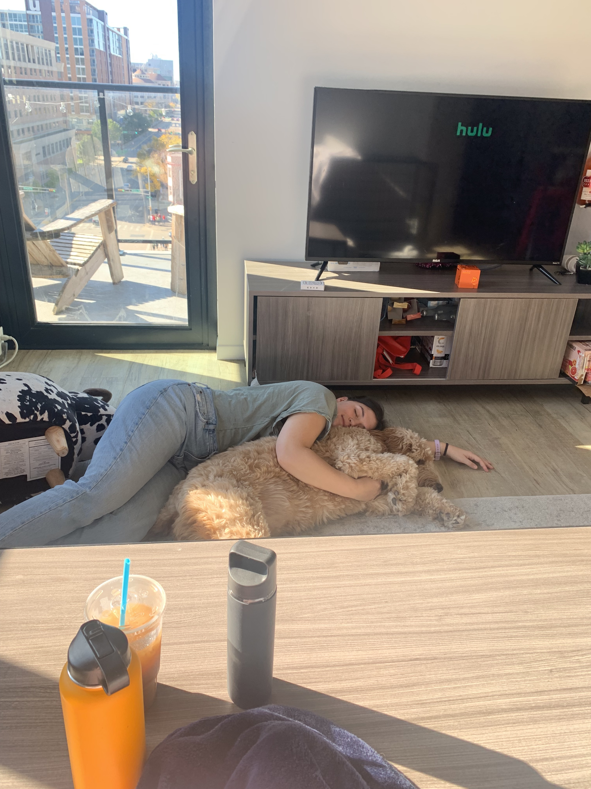

TV Shows
My Favorite TV Shows of All Time
Below are my favorite television series that I've ever watched. I try to watch a variety of different genres, and I have loved so many. It was hard to choose only five of my favorites to rank... I have too many!
- The Office
- Big Little Lies
- Criminal Minds
- How I Met Your Mother
- Gilmore Girls
TV Watching

Here is a picture of my sister snuggling our dog while watching Hulu on the television. On this day, we decided to watch the show, Survivor... another one of my favorites.